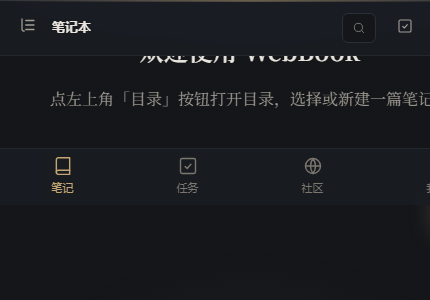
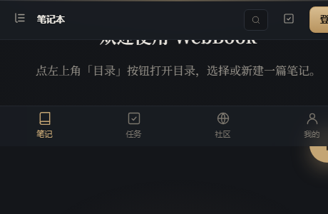
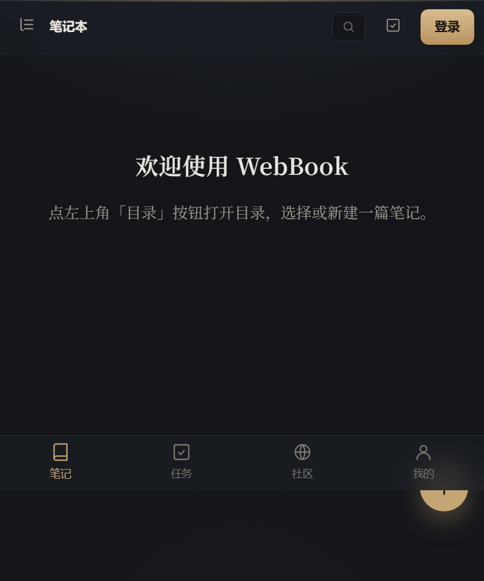

移动端：底栏放不下、首屏文字被裁
底部导航和悬浮新建（PRD U-03）已经落地，方向对。但 390px 实测有两个确定的缺陷：
底栏第 4 项「我的」被推到屏外，
首屏说明文字横向溢出被裁。这一页把两个都修掉。
实测证据：4 项在 500px 放得下，在 390px 放不下
下面是同一页面在四个宽度下的 headless Chrome 实拍，只截底栏那一条。




修复前 / 修复后
欢迎使用 WebBook
点左上角「目录」按钮打开目录，选择或新建一篇笔记。
修复前 · 390px
红线标出裁切位置：底栏每项被撑到约 124px，一行需要 ~480px → 「我的」整项在屏外。
空态那句说明继承 .empty-state 的衬线体 + 16px，
390px 下排不下一行就直接溢出（字号本身就是原因之一）。
先写下一句话
点右下角的 ＋ 就能开始。笔记先存在这台手机上，登录后自动同步。
修复后 · 390px
4 项平分、标签 min-width:0 可省略；空态正文限宽 26ch 居中；
FAB 抬到底栏之上 70px，不再压住导航。
战斗演出编辑器架构设计
2 小时前 · 12 个块
光照管线笔记
昨天 · 8 个块
战损贴花使用指南
公开 2026-09-10
工具链
栏目 · 4 篇
修复后 · 360px（小屏）
列表项标题 ellipsis；封面缩略图按 note.id 派生，扫一眼能认出笔记。
四个具体改动
| 项 | 做法 | 为什么这样做 |
|---|---|---|
| 底栏放得下 4 项 | .m-nav-item { flex: 1 1 0; min-width: 0; white-space: nowrap; overflow: hidden; text-overflow: ellipsis }；≤400px 时标签降到 10px |
现在每项被内容撑到 ~124px。给 min-width:0 是让 flex 能真正压缩——这一条同时也是 390px 下「我的」被推出的直接原因 |
| 空态正文限宽 + 降字号 | 空态正文加 max-width: 26ch; margin: 0 auto；字号从继承的 16px 衬线改为 --fs-sm(13px) 无衬线，只有标题保留衬线 |
现在 .empty-state 只设了 text-align:center 和 font-family: serif，正文继承 16px —— 窄屏单行长句必然溢出。16px 衬线做提示文案本身也偏大 |
| FAB 不压导航 | bottom: calc(70px + env(safe-area-inset-bottom)) |
底栏约 58px 高，留 12px 间隙；用 env() 兼容全面屏 |
| 圈子上底栏 | 底栏第 3 项「社区」展开为「社区 / 圈子」，或把「圈子」并进「社区」页内的 tab | 现在手机上没有圈子的常驻入口，只能翻账号菜单——而桌面账号菜单里有。两端口径要对齐 |
顺带：底栏与顶栏 nav 的关系
同一个数据源，两种布局
移动底栏和桌面顶栏 nav 应该是同一份 { key, label, icon, to, badge }[] 的两种渲染：
桌面横向排（图标 + 文字），手机竖向排（图标在上、文字在下）。
这样「手机上有的去桌面也一定有」不再靠人记。
断点：≤720px 隐藏顶栏 nav、显示底栏；721–1080px 顶栏 nav 只留图标。